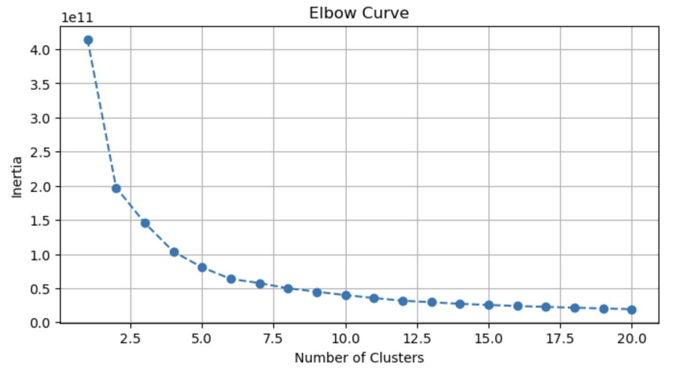

Airline Customer
Segmentation
Objectives
Identify key customer segments from reservation data. Visualize segmentation insights for business decision-making. Provide marketing recommendations to improve customer engagement.
Methodology
Data Preprocessing K-Means Clustering Segment Analysis Data Visualization Business Recommendations
Data Overview
- Clustering Data.csv
-
This file contains mostly numerical data, to be more compatible with clustering. The categorical variables have been converted to numerical values and all variables are normalized to a value between 0 and 1.
- Main Data Dictionary
-
Columns Description Data Type Booking Channel This represents how the passenger booked the flight. Categorical Base Fare Amount This represents the amount of the base fare (without taxes) of all segments on the ticket. Numerical Ufly Member Number This represents the Ufly member status. It will be either Standard or Elite. Categorical Group Size This represents the size of the group if the trip consisted of more than one passenger. Categorical Age This represents the age of the passenger at the time of flight. Numerical
Data Analysis
- Preprocessing
-
- Checked and handled null values; normalized numerical columns for consistency.
- Encoded categorical features such as age_group, trip type, seasonality for clustering use.
- Apply K-means
-
- Key Code:
inertia = [] cluster_range = range(1, 21) for cluster_num in cluster_range: kmeans = KMeans(n_clusters=cluster_num, n_init='auto', random_state=42) kmeans.fit(clustering_data) inertia.append(kmeans.inertia_)- Used the elbow method to determine the optimal number of clusters (K=5).
- Based on the K-Means method, 26,575 data are divided into 5 segments.
Segment Numbers Description 1 7,135 High-Spending Group Travelers 2 7,481 Group Travelers with Moderate Spending 3 4,101 Price Sensitive Young Travelers 4 4,348 Solo Travelers with Moderate Spending 5 3,510 Direct Booking Family and Group Travelers
Visualization & Recommendations
Segment 1
High-Spending Group Travelers
High-spending group travelers who are less loyal and frequently book through third-party platforms. For this customer, the company should offer group discounts, promote Ufly membership benefits, and enhance the online booking experience for group travelers.
Segment 2
Group Travelers with Moderate Spending
Group Travelers with Moderate Spending who prefer to book through Sun Country's website but have low loyalty program participation. For this customer, the company should also encourage Ufly membership and offer tailored group vacation packages.
Segment 3
Price Sensitive Young Travelers
Price Sensitive Young Travelers who prioritize low fares and use third-party platforms. For this customer, the company should promote affordable fares to them, increase awareness of third-party booking sites, and use social media to attract young travelers.
Segment 4
Solo Travelers with Moderate Spending
Solo Travelers with Moderate Spending who tend to book in advance and participate in the Ufly loyalty program. The company can attract this customer by offering early booking discounts, creating promotions for solo or small group travelers, and offering membership upgrade rewards.
Segment 5
Direct Booking Family and Group Travelers
The last group of customers are mainly non-loyalty program members who prefer to book directly through the airline website. The company can provide exclusive website booking offers, engage with customers through email and SMS, and offer free trials of Ufly membership.
Tech Stack
Languages & Tools
- Python – Used for data preprocessing, feature selection, and clustering analysis (K-Means)
- Pandas – Data manipulation and merging (e.g., merge(), handling missing values)
- scikit-learn – Applied KMeans for customer segmentation
- Google Colab – Cloud-based environment for running and sharing Python code
- Matplotlib / Seaborn – For generating visualizations in Python
Techniques & Methods
- K-Means Clustering – Performed customer segmentation with 5 clusters
- Data Normalization – All variables normalized between 0 and 1
- Feature Engineering – Converted categorical variables to numerical format for clustering
- Data Merging – Joined cluster results with original reservation data for in-depth analysis
- Data Visualization – Visualized key characteristics of each customer segment using charts